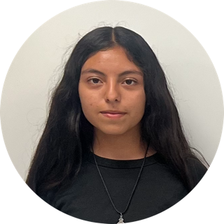
1st place $150 scholarshipGiving back
Supporting local education, one project at a time.
Alfredo Jimenez built Jimenez Mobile Detailing on service, and that same spirit reaches beyond the driveway. This spring, he put his support behind the next generation of local creatives at Pioneer Valley High School.
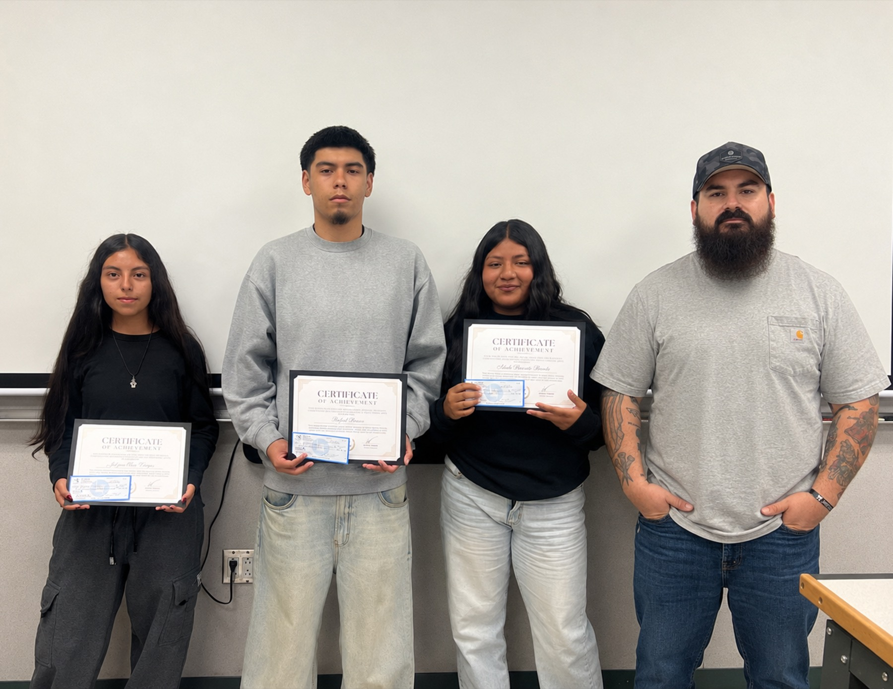
The project
A real business, a real brief, real experience.
For the spring company branding final in Mr. Silva's Digital Arts class at Pioneer Valley High School, Alfredo did something most students rarely get in the classroom: he handed them a real local business to design for. Rather than an invented brand, Jimenez Mobile Detailing became the students' mock client, giving them the kind of authentic challenge working designers face every day.
Alfredo started the project the way a professional engagement begins, providing the class with a detailed creative brief that laid out his business, his values, and what he needed. Students then interviewed him directly to dig deeper into the brand, its customers, and its goals, learning to listen for what a client actually needs before opening a single design file.
From there, the students went to work. They refreshed the Jimenez Mobile Detailing logo and created social media content built to fit the brand, presenting finished branding work grounded in a real client's voice. The result was a portfolio-worthy final project and a genuine taste of what it means to design for a living, local business.
The scholarships
Three students, recognized for their best work.
Alfredo sponsored three scholarships for the students who produced the strongest branding work in the class.
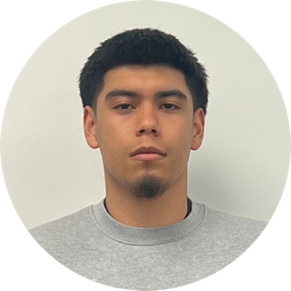
2nd place $100 scholarshipRafael B.
Isbeth B.
Student work
Swipe through the students' branding designs.
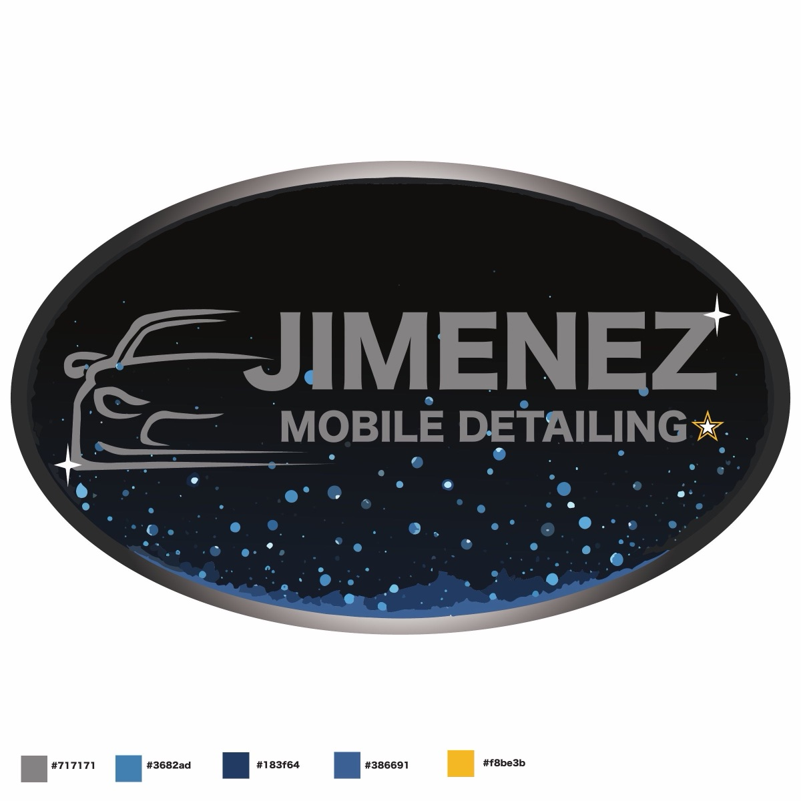
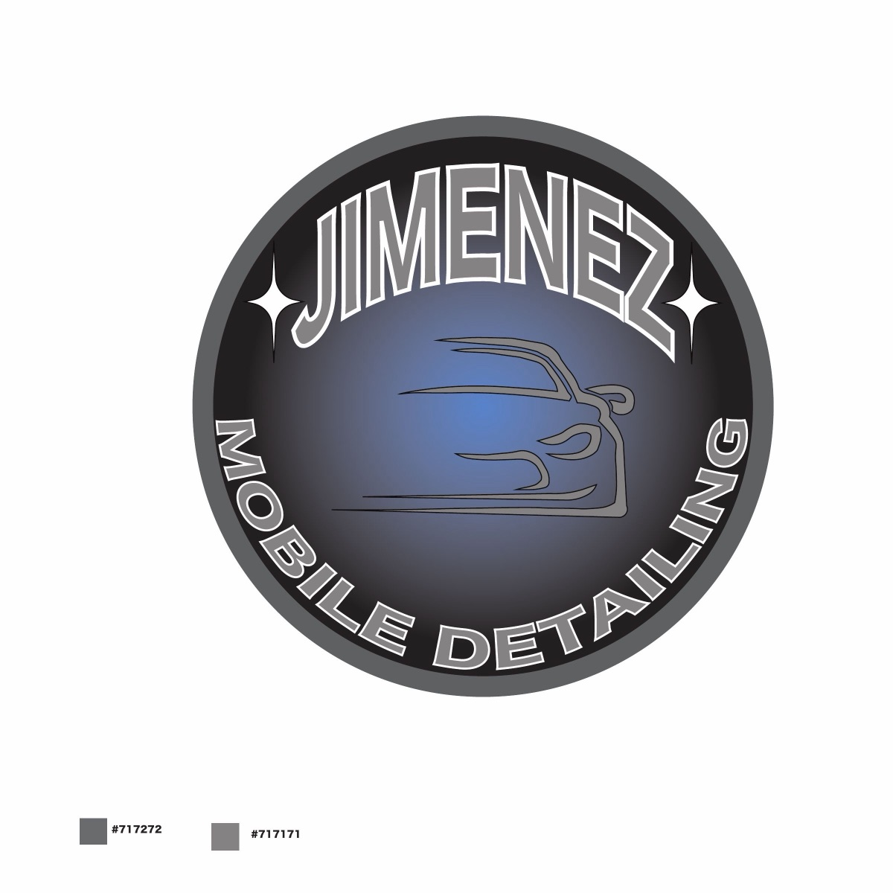
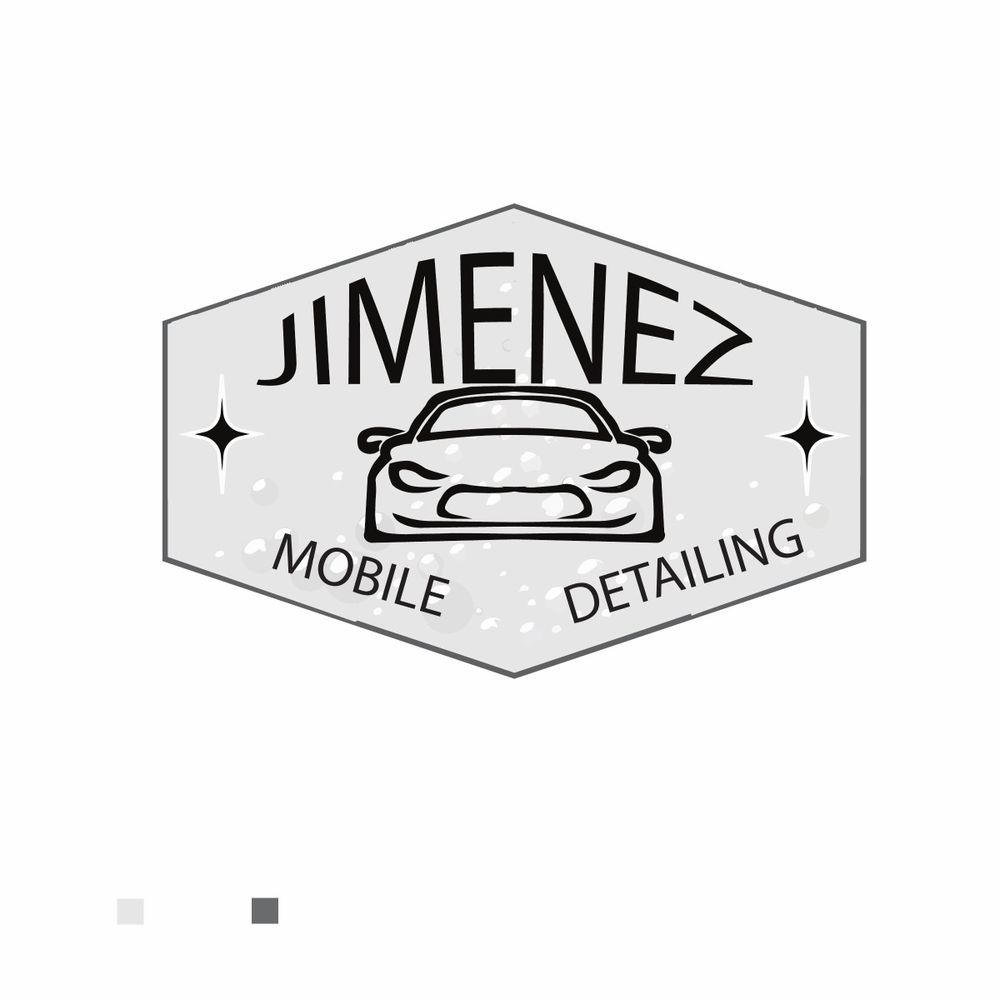
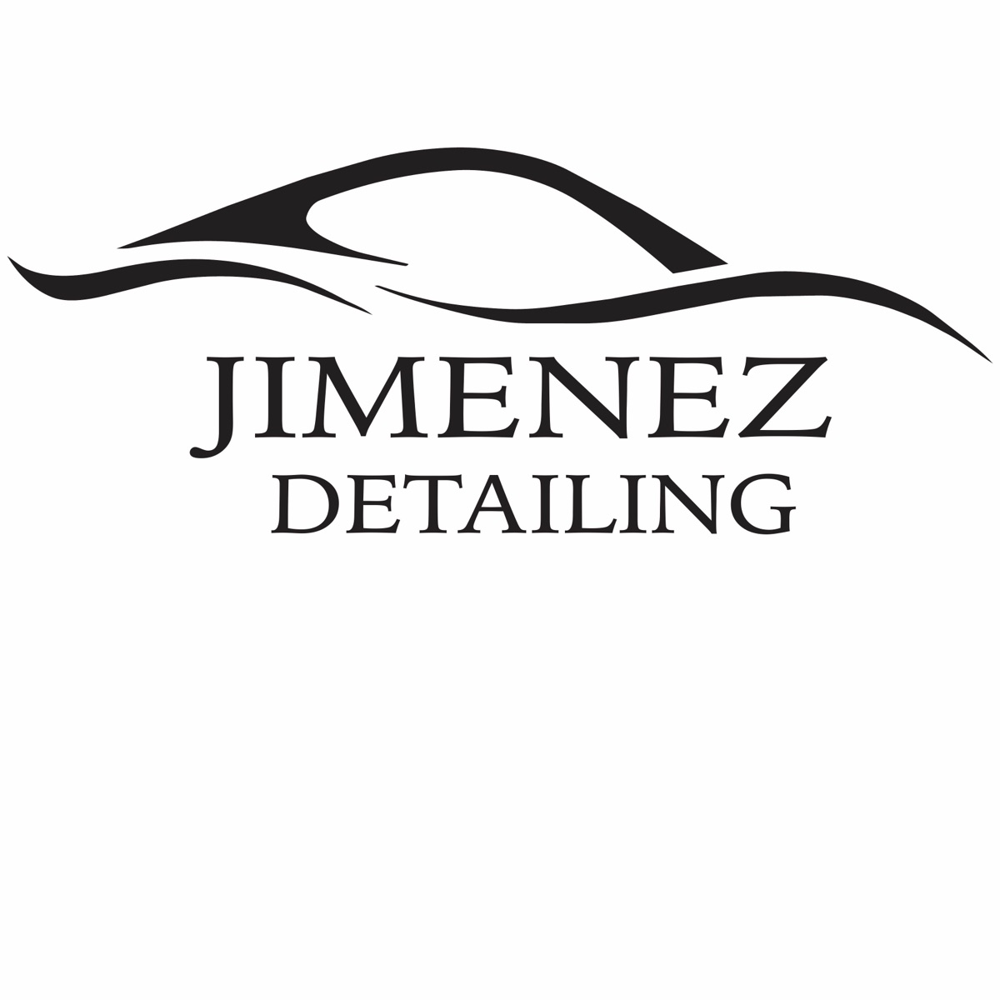
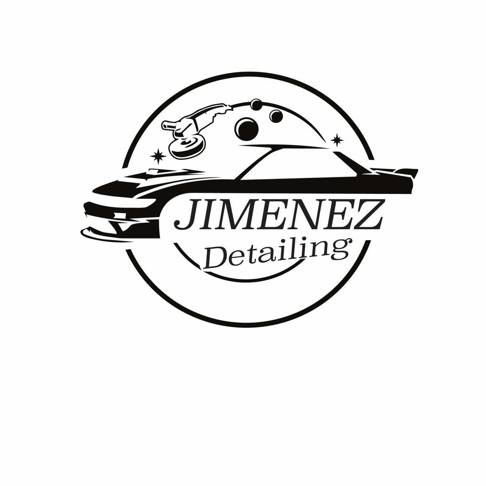
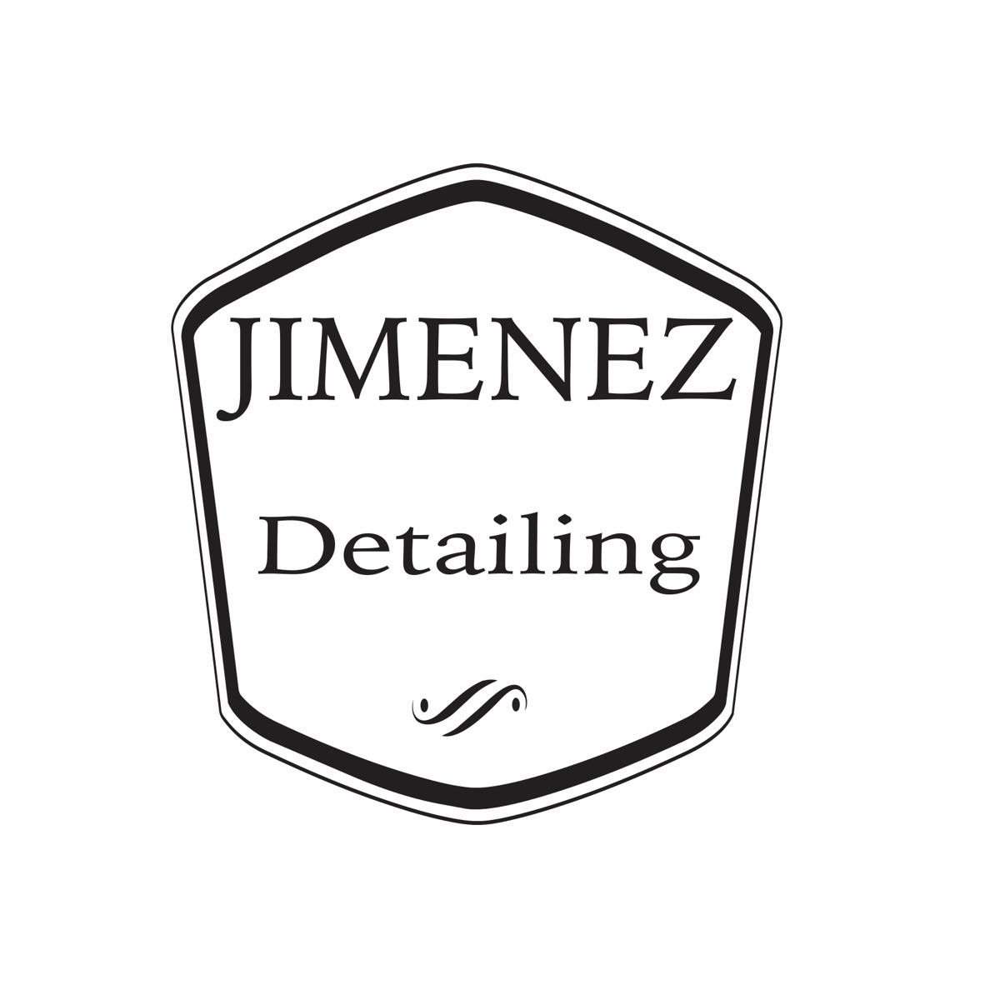
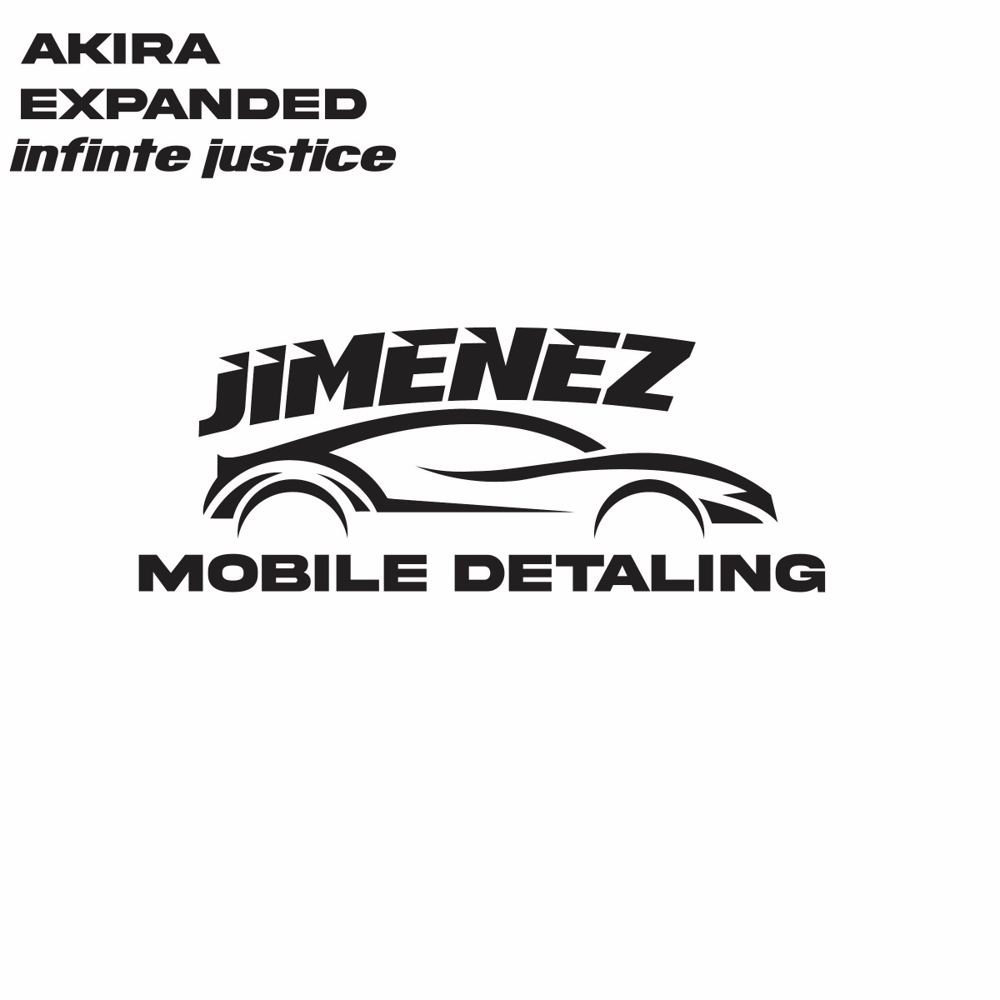
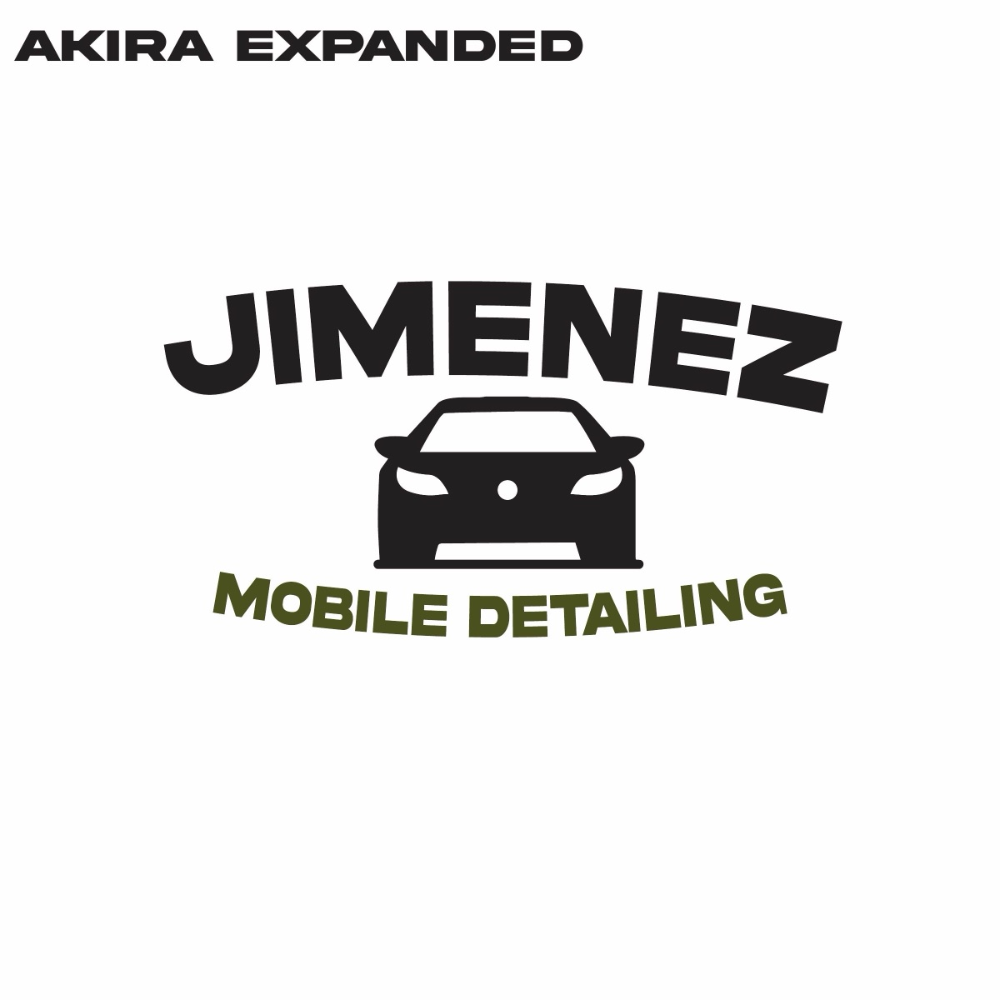
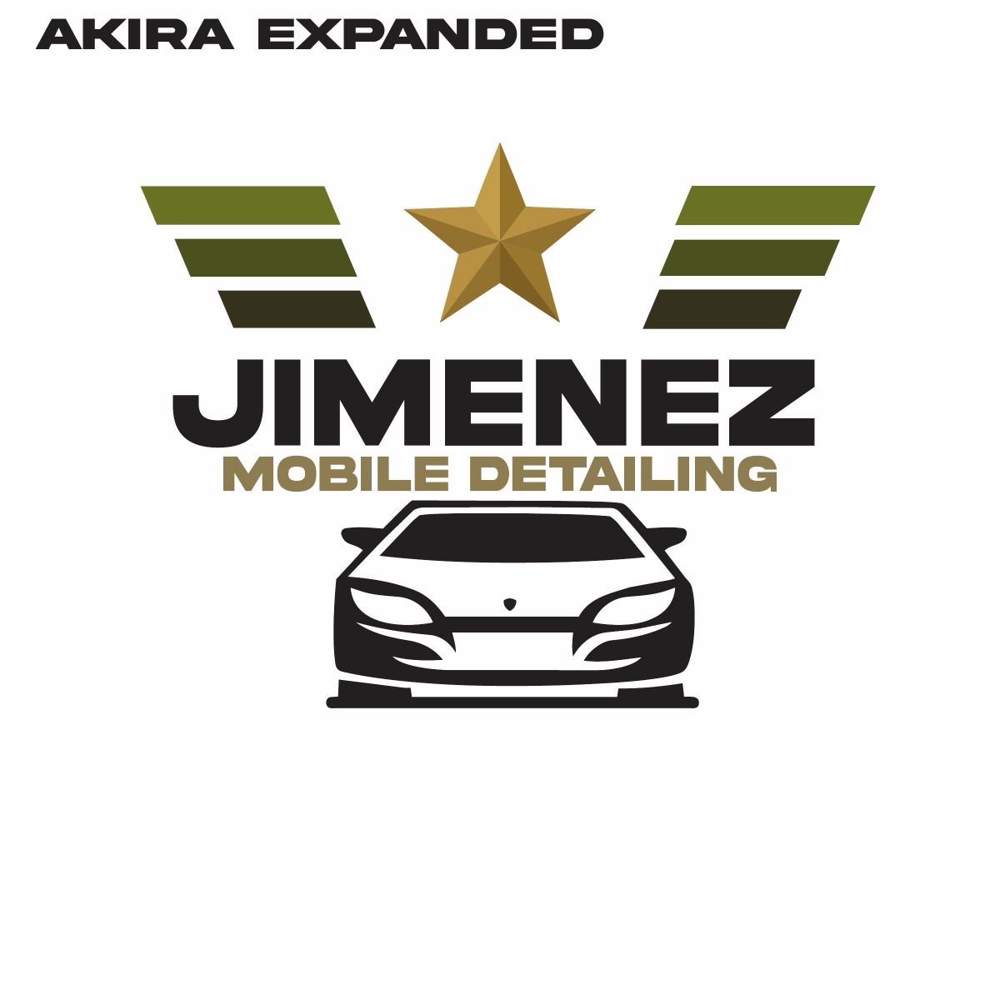
Why it matters
A philanthropic approach to the arts and education.
Alfredo genuinely enjoyed sponsoring this project and working alongside the local students, and it reflects how he thinks about giving back. By investing his time, his brand, and three scholarships, he gave Pioneer Valley High School students real-world experience and a reason to keep creating. Supporting the arts and local education is a value Jimenez Mobile Detailing is proud to stand behind.
Book Your Detail